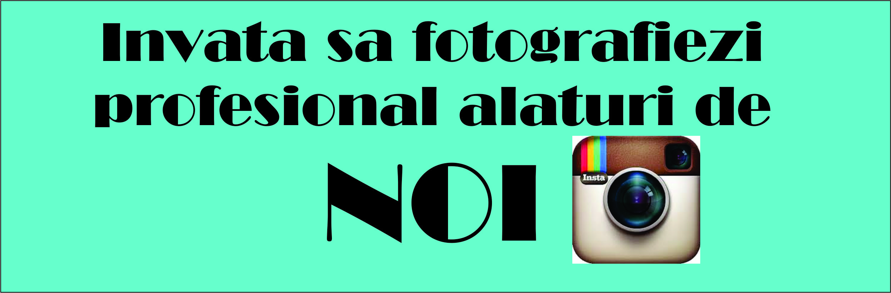
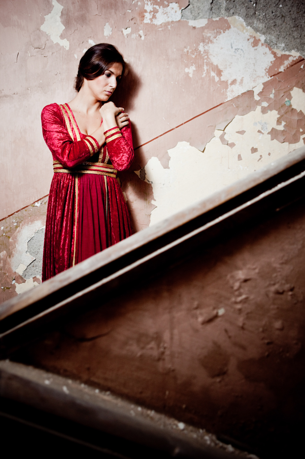

|  |
TutorialeCreeaza o legatura cu subiectul tau Foloseste Distante Focale Mari "Trage" Wide Incearca obiectivele de 50mm Alb Negru Invata tot ce poti despre lumina Nu iti fie frica sa folosesti blitzul Invata setarile camerei foto Cauta naturalete Implica cadre in miscare |
||
|---|---|---|
Invata setarile camerei fotoCamera foto te poate ajuta sa iti faci munca mai usoara. Cele mai uzuale setari pe care trebuie sa le verifici sunt:Picture Quality – deobicei sunt doua variante; Prima varianta RAW/NEF – care este un format necompresat, brut, un format care iti ofera un spatiu mai mare de “manevra” in post-procesare. Este recomandat sa fotografiezi RAW/NEF, insa fisierele sunt mai mare ca dimensiune si exista posibilitatea sa creeze probleme de stocare. A doua varianta este JPEG – cel mai uzual format, nu ofera atat de mult spatiu de “manevra” in postprocesare si retine toate datele legate de Picture style, WB, etc care sunt setate direct din camera. Ca si dimensiune, sunt mai mici si nu creeaza asa mari probleme de stocare. White Balance (balans de alb) – in functie de tipul de lumina disponibila, putem modifica temperatura de culoare pe care sa o interpreteze camera foto. De ex: daca afara este innorat, folosim setarea Cloudy din meniul de balans de alb. ISO (sensibilitate) – Aceasta o modficiam in functie de cantitatea de lumina disponibila. Daca fotografiezi intr-o zi insorita vei seta ISO-ul la o valoare cat mai mica, iar daca vei fotografia inspre seara aceasta valoare va trebui crescuta pentru a-ti oferi un timp de expunere suficient de scurt ca sa nu ai miscare in fotografie. Picture Style (Picture Controls) – daca fotografiezi in mare parte JPEG, aceste setari te pot ajuta sa te apropii de rezultatul final dorit direct din camera. De ex. setarea Portrait in cazul in care fotografiezi portrete. Binenteles, recomandam citirea manualului de utilizare a camerei foto, mai ales daca esti un fotograf la inceput de cariera. In fotografia de mai jos s-a folosit un blitz, WB (balansul de alb) a fost setat pe Flash si s-a fotografiat RAW. |

||